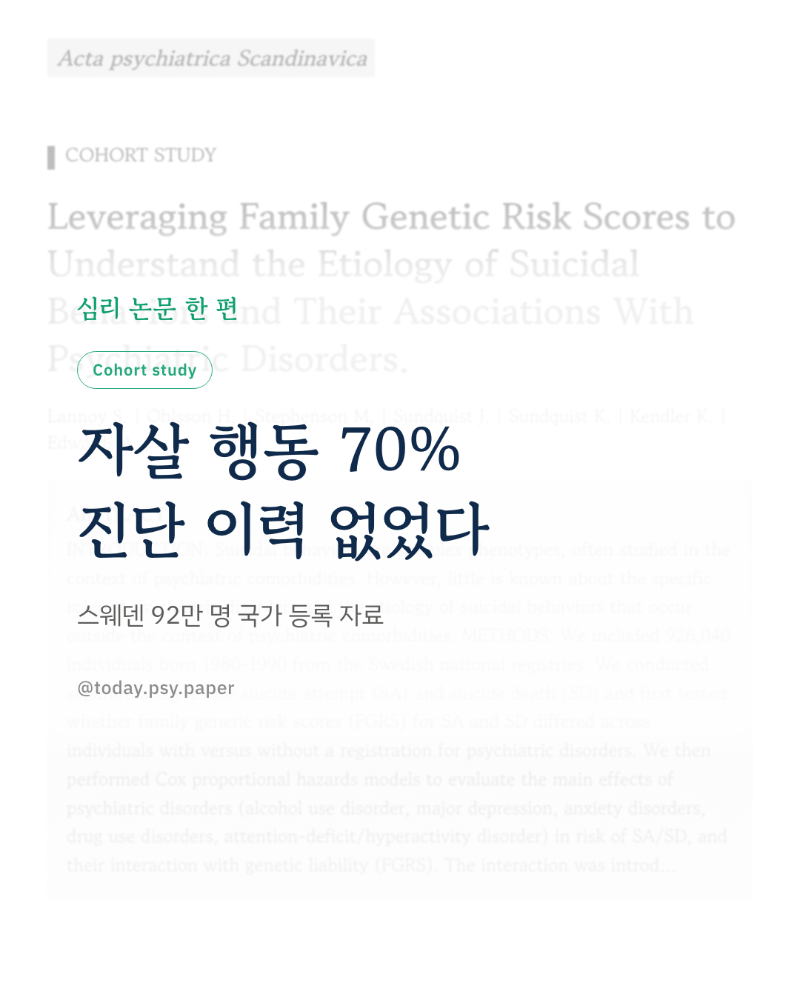
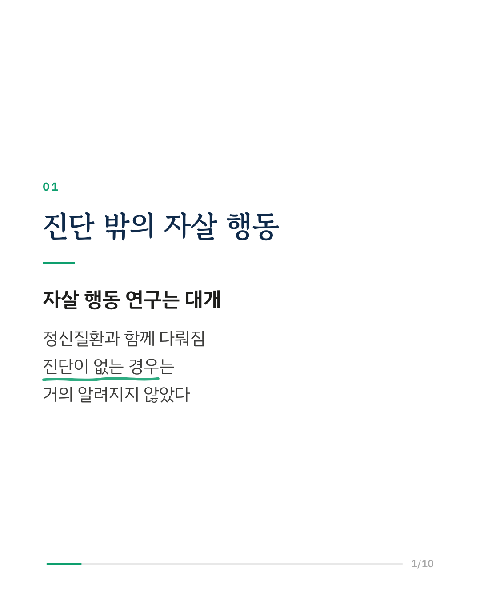
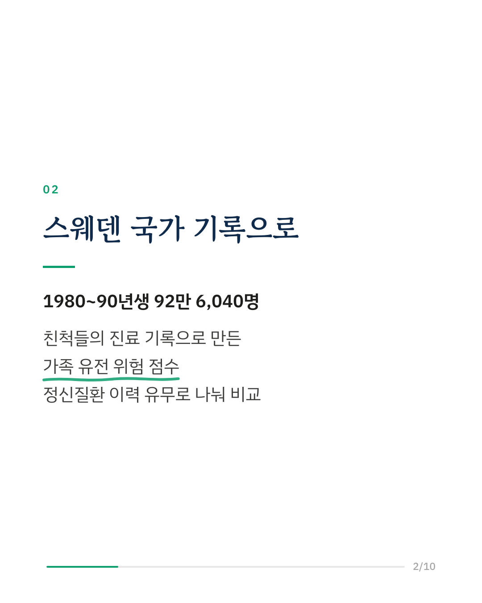
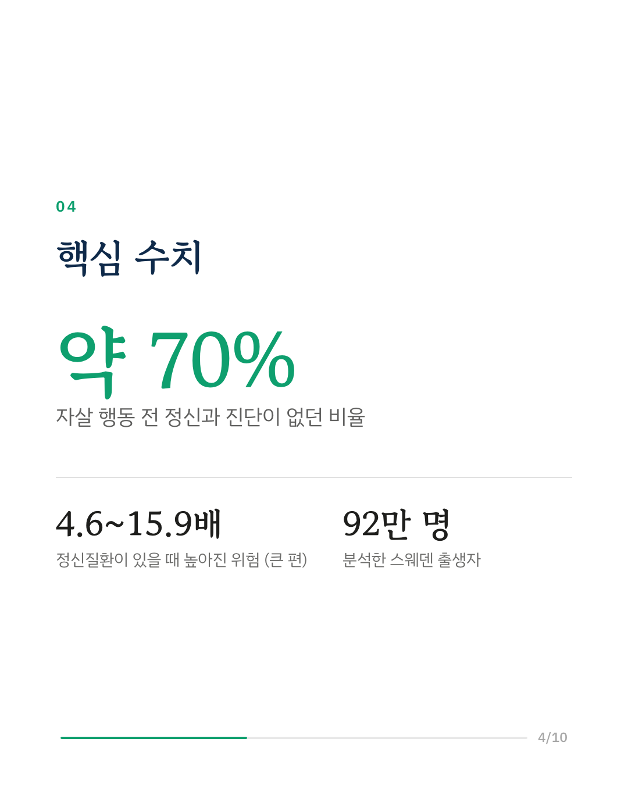
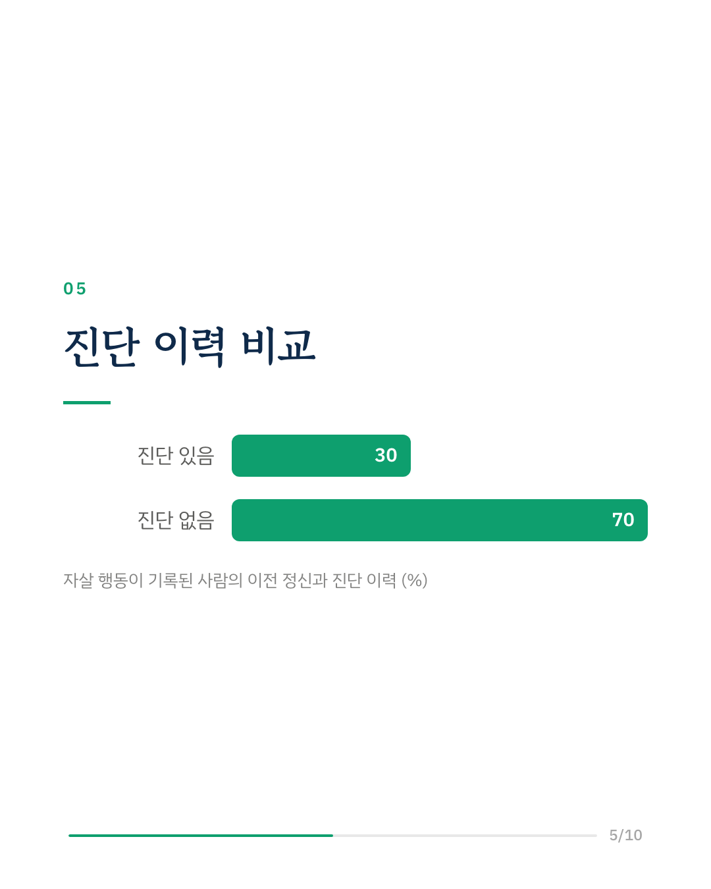
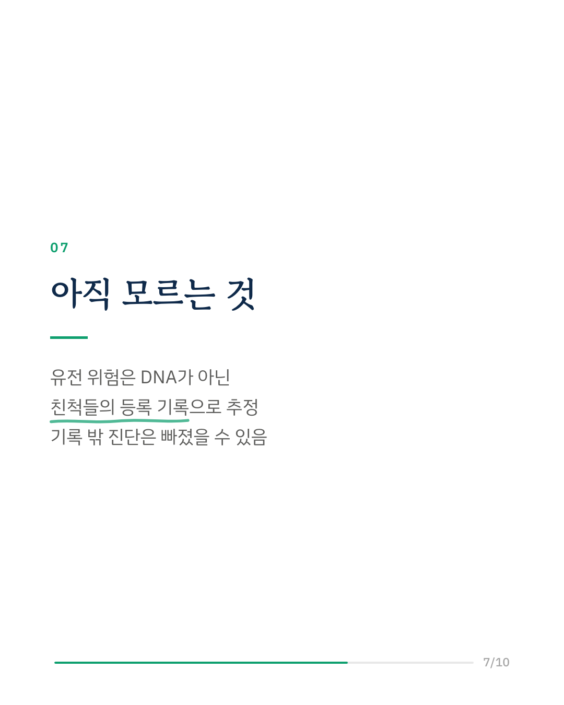
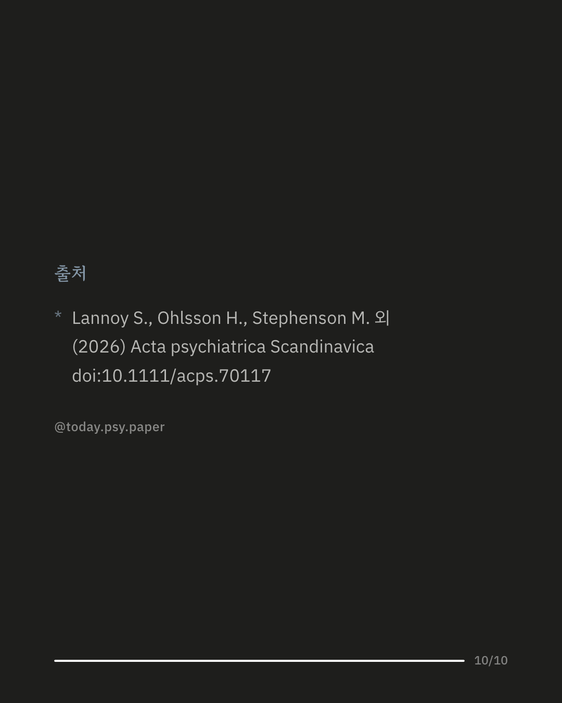

자살 예방은 흔히 우울증 같은 정신질환 치료와 함께 이야기됩니다. 그런데 정신과 진단이 없던 사람의 자살 행동은 상대적으로 덜 연구되어 왔습니다. 스웨덴 연구진은 1980~1990년에 태어난 92만 6,040명의 국가 등록 자료를 분석했습니다. 친척들의 진료 기록으로 계산한 '가족 유전 위험 점수'를 이용해, 정신질환 이력이 있는 사람과 없는 사람을 나눠 비교했습니다. 자살 행동이 기록된 사람 가운데 이전에 정신과 진단이 있었던 사람은 약 30%였습니다. 알코올·약물 사용 장애, 주요우울장애, 불안 장애, 주의력 결핍 과잉행동장애는 모두 위험을 크게 높였습니다. 한편 정신질환 이력이 없는 사람들은 가족 유전 위험이 평균적으로 낮았지만, 그 위험과 자살 행동의 관련성은 오히려 더 컸습니다. 연구진은 정신과 진료 밖에서도 선별과 예방이 필요하다고 정리했습니다. 다만 유전 위험은 DNA가 아니라 친척들의 등록 기록으로 추정한 값이라, 진료 기록에 남지 않은 진단은 반영되지 않았습니다. Acta Psychiatrica Scandinavica (2026), 'Leveraging Family Genetic Risk Scores to Understand the Etiology of Suicidal Behaviors and Their Associations With Psychiatric Disorders' 힘든 마음이 들 때는 자살예방상담전화 109, 정신건강상담전화 1577-0199에서 도움을 받을 수 있습니다. DOI: 10.1111/acps.70117 #임상심리 #정신건강정보 #심리학연구 #논문리뷰 #자살예방 #정신질환 #가족력
python3 publish.py 42320979